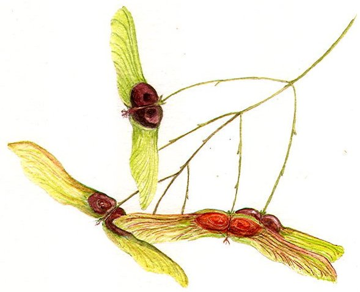

Parlas
altérant (infusion) - 30 po
↪ plante - marais - été
↪ plante - marais - été
 Cette herbe, appelé aussi « herbe de jeunesse », rajeunie en apparence un sujet de manière temporelle. On utilisait autrefois la parlas pour lutter contre la variole, mais la plante devenant extrêmement difficile à trouver, cet usage n'est plus le principal. Attention toutefois, la parlas semble être addictive sur de nombreuses personnes.
Cette herbe, appelé aussi « herbe de jeunesse », rajeunie en apparence un sujet de manière temporelle. On utilisait autrefois la parlas pour lutter contre la variole, mais la plante devenant extrêmement difficile à trouver, cet usage n'est plus le principal. Attention toutefois, la parlas semble être addictive sur de nombreuses personnes.
Boire une infusion de parlas rajeunie en quelques minutes l'apparence du sujet de 1d6 ans durant 8 heures. Puis, lentement durant les 8 heures qui suivent, cet effet disparait et le sujet reprend sa véritable apparence.

Illustration reproduite avec l'aimable autorisation de Christine Achard
Illustration reproduite avec l'aimable autorisation de Christine Achard
Recueil des plantes d´AideDD